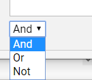

If Text Search section is not visible in the Advanced Search tab, click the corresponding arrow .
As required, select one or more search options from the Search Features list, as described in the following table.
|
|
Note:
|

|
Component |
Description |
|
Stemming |
Search for terms and all words beginning with the root form of the word entered. For example, searching for operation with this option selected will return documents containing operation, operate, and operator. (The root form of operation is considered operat.) |
|
Phonic |
Search for terms that sound similar but are spelled differently. For example, searching for smith with this option selected will return documents containing smith, smithe, and smythe. |
|
Fuzzy |
Search for terms that are not quite an exact match but are close. Useful for searching text fields in which some characters may not have been interpreted correctly by an OCR engine. Select a number from 0 to 9 to specify the degree of fuzziness that will be accepted. Values from 1 to 3 represent moderate levels of error tolerance and are used most often. Higher numbers result in a higher error tolerance (more results). Fuzzy search results may vary, depending on such factors as the length of the search term and/or position of incorrect characters. |
|
Synonyms |
Search term(s) that have the same meaning as the word that you enter, such as the words legal and authorized. Synonyms are defined by the WordNet® concept network. For details on WordNet, see http://wordnet.princeton.edu/. |
|
Related Words |
Search for the term you enter and related terms as defined by the WordNet concept network. For example, words may be related by being a subset of the search term (such as furniture and chair). WordNet considers many types of relationships, as discussed on their Web site. |
Enter any full-text search term or phrase in
the Keyword field. Use
the syntax explained in

After the text search is defined, complete your Advanced Search definition as required.